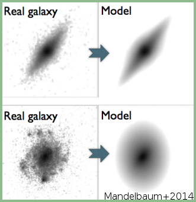

100k Galaxy Models from the COSMOS-ACS Data
The miniscule distortion of galaxy shapes due to weak gravitational lensing is one of the best cosmological tools for characterizing dark matter halos and memeasuring the expansion history of the universe. The GREAT3 challenge was designed to test techniques for measuring this distortion, using the observed distribution of galaxy shapes. For my part in this work, I fit parametric models to over 100,000 real galaxy from Hubble Space Telescope data using code I developed as a part of my thesis. The parametric models are available here.